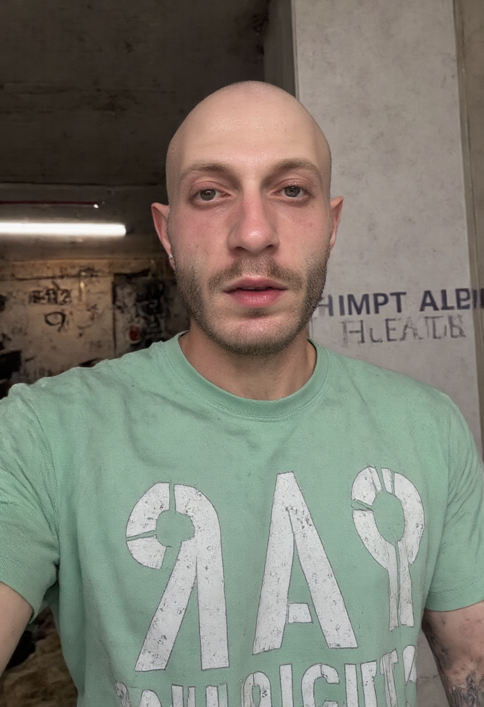
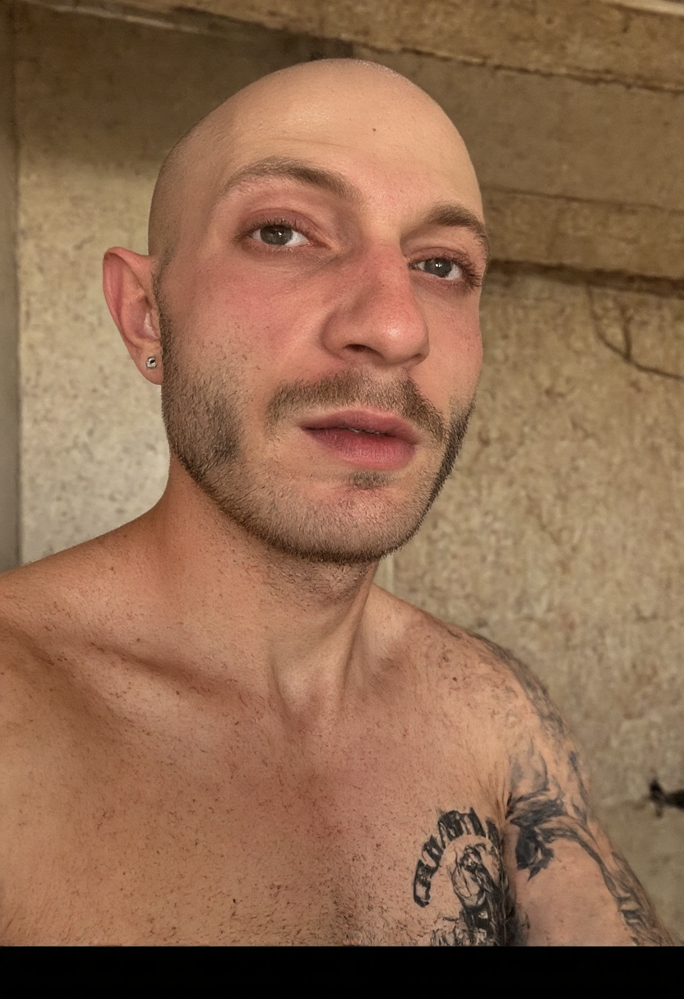
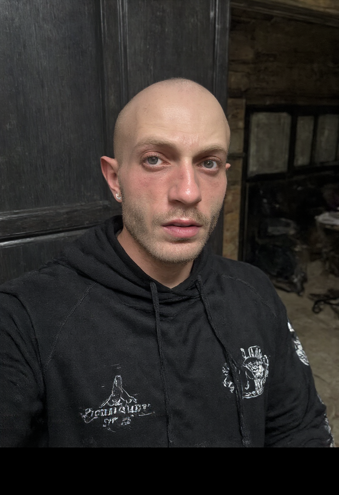

זה אתה — v1 מול v2
משמאל הגרסה הישנה (v1, dim 16), מימין החדשה והחזקה (v2, dim 32). כל התמונות מיוצרות ע"י AI — לא צילומים אמיתיים.
פרצוף (תקריב)
v1
v2

גוף
v1
v2

תרגיל (כפיפת-מרפק)
v1
v2

✅ מה השתפר ב-v2
- הפנים נעולות — בכל הזוויות זה אותו אדם בדיוק. זה התיקון לבעיה של "הפרצוף משתנה".
- נראה כמו אדם אמיתי וספציפי, לא דמות גנרית.
⚠️ מה שחשוב לדעת
- ה-LoRA למד גם את סגנון הסלפי של התמונות שהעלית, אז גם כשמבקשים "גוף מלא בחדר-כושר" הוא נוטה להחזיר סלפי-תקריב.
- לשוטי "מנטור מדבר למצלמה" (תקריב) — מושלם, מוכן. לשוטי גוף-מלא/תרגיל — אוריד עוצמה (~0.7) ואוסיף כיוון-תנוחה.
🎯 השאלה אליך: תסתכל על העמודה הימנית (v2). הפרצוף — זה אתה? הגענו ל-90-95%?
אם כן — מחבר את ה-LoRA לצינור-הריאלס ובונים ריאל אמיתי איתך. אם חסר — נחדד.
אם כן — מחבר את ה-LoRA לצינור-הריאלס ובונים ריאל אמיתי איתך. אם חסר — נחדד.
Familia · כוח של משפחה · @familia_fitness_coach